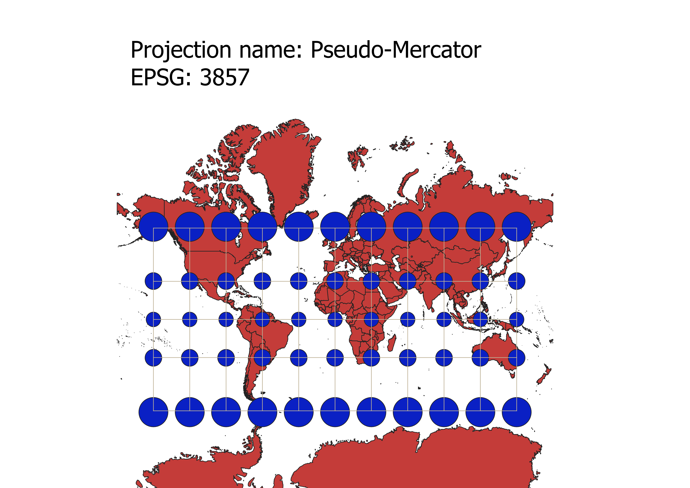

In this project I learned how to display images in different projections
Describe in your own words how you displayed the map in different projections using QGIS
I was able to display the image of the map as different projections in QGIS by first exporting the map as a ESRI shapefile. When exporting, I changed the EPSG of the map to the specific projection desired. After that, I added the graticules and caps via the indicatrix mapper plugin. Lastly, I changed the CRS (coordinate reference system) of the project properties in the bottom right corner, added the description of the EPSG and projection using print layout, and saved the image as a JPEG.
WGS84 Projection
Some observations

Aitoff Projection
Some observations

Pseudo Mercator Projection
Some observations

Sphere Winkle I Projection
Some observations

World Cylindrical Equal Area Projection
Some observations
World Equidistant Conic Projection
Some observations
MAP 102016 HERE
Some observations

MAP #6
Some observations
MAP #7
Some observations
Now, you should add the following projections on your own:
EPSG: 3857, 53018, 54034, 54027, 102016, and two additional projections that you choose.
Data used for this project
Download Natrual Earth 1:10m Cultural Vector